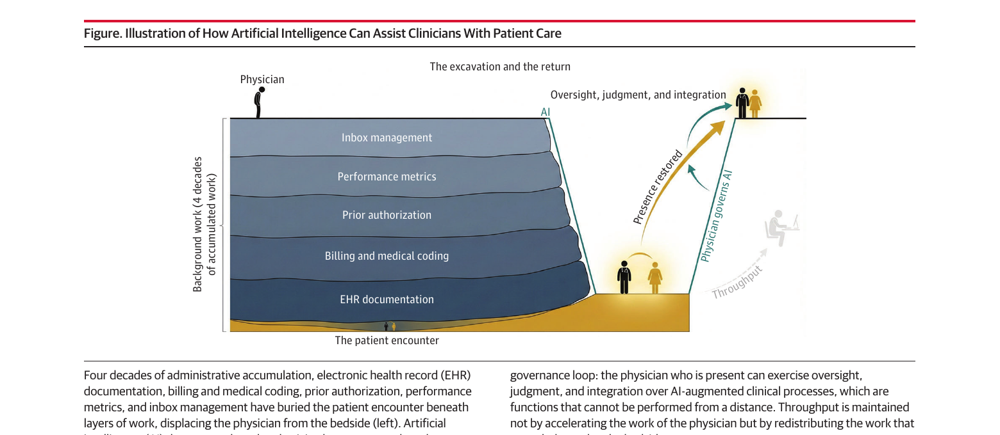

本ページで使用する略語一覧
| 略語 | 正式名称 — 日本語訳 |
| AI | artificial intelligence — 人工知能 |
| LLM | large language model — 大規模言語モデル |
| EHR | electronic health record — 電子カルテ |
| SMD | standardized mean difference — 標準化平均差 |
| CI | confidence interval — 信頼区間 |
SECTION 1 AIが「共感」で医師を上回った — 衝撃的な発見とその真意
誰も予測しなかったこと
誰もAIが最初に「共感」の領域で医師を凌駕するとは予測していなかった。診断精度や画像解釈ではAIが医師を超える可能性を議論してきた。しかし「共感」だけは人間固有の最後の砦とされていた。その前提が崩れた。盲検化されたテキストベースの評価において、AIチャットボットの回答は複数の専門領域で医師の回答を共感スコアで上回るようになったのだ。
この発見は一部の公論を過激な方向に引っ張っている。「医学部はまもなく無意味になる」「医師はコストのかかる時代錯誤の存在だ」という言説が広まっている。しかしこれらは臨床的結論ではなく、医療を「置き換え可能」と描写することで利益を得る商業的外挿にすぎない、と著者らは述べる。
メタ解析のデータを正確に読む
AIチャットボットの共感スコアが医師を上回ったとする根拠は、13件の研究のプールメタ解析[Howcroft 2025]に基づく。この結果は統計的に有意であるが、同時に以下の重大な限界を持つ。
- 比較はすべてテキストベースであり、ベッドサイドでの実際の診察ではない
- 対象研究は異質性が高く、出版バイアスを除外できない
- AIチャットボットは患者を診察したことがなく、表情を読むことも、不確実性の中でケアプランを遂行することもできない
- 最も高い共感評価が得られたのは、AIが生成したテキストを医師が書いたものと思わせた実験的条件においてである — 人々は医師が書いたと信じたかったのだ
AI vs 医師（共感スコア）
p < .001
（異質性あり）
本当の問題は何か
著者らの鋭い指摘はここにある。アルゴリズムが「共感的」になったわけではない。医療という職業が、AIでさえ上回れるほどベッドサイドから遠ざかってしまったのだ。これは医療において何かが深刻に間違った方向に進んでいることを示している。AIが何らかのヒューマン閾値を超えたのではなく、臨床の仕事が直接的な患者ケアから引き離されるよう再編成されてきた結果である。
SECTION 2 4十年の行政的蓄積 — The Excavation
「分数の積み重ね」で起きた変化
変革は単一の政策によって起きたのではない。それは「分数」の積み重ねだった。書類作成、業績評価指標、事前承認、請求業務、受信箱対応 — これらのひとつひとつは些細に見えた。しかし分数は複利のように蓄積される。規制ひとつ、クリックひとつのたびに、医療という職業はいつの間にか何を失ったかに気づかなくなっていた。
40年以上かけて、臨床の仕事は間接的な患者ケアへのフォーカスへと埋め尽くされた。外来診療において、医師は診療時間の49%をEHRおよび書類作業に費やし、直接患者と接するのはわずか27%にすぎない。[Sinsky 2016]
外来診療時間に占める割合
外来診療時間に占める割合
蓄積期間
The Excavation — 図が示すもの

【左側：発掘（The Excavation）】 40年間にわたる行政的業務の蓄積——EHR書類作成、請求・医療コーディング、事前承認、業績評価指標、受信箱管理——が患者との診察を幾重もの作業の下に埋め、医師をベッドサイドから遠ざけてきた。
【右側：帰還（The Return）】 AIは医師を置き換えるのではなく、これらの層を「発掘」し、ケアの場への直接的な存在を回復する。この帰還が「医師がAIを統括する循環ループ」を生み出す——その場に存在する医師だけが、AI拡張された臨床プロセスに対して監督・判断・統合という機能を発揮できる。スループットは医師の作業を加速させるのではなく、ベッドサイドに本来属さなかった作業を再配分することで維持される。
SECTION 3 バーンアウトと「職業的損傷」
バーンアウトの実態
行政的業務によるベッドサイドからの離脱はバーンアウトの一因であり、かつ最も是正しやすい要因のひとつである。全国調査[Shanafelt 2025]によれば、医師のバーンアウトは2011年から2023年にかけて高い水準が続き、COVID-19流行期に62.8%でピークを迎え、2023年には45.2%に低下した。しかしこれは解決ではなく基準値への回帰にすぎない。
COVID-19流行期ピーク
2023年（基準値への回帰）
（高水準が持続）
より深い損傷 — 「職業的損傷」
行政的業務の問題はバーンアウトにとどまらない。著者らが指摘するより深い損傷は「職業的（vocational）」なものだ。行政医療は医師の自律性を奪い、能力を「規則への準拠」として再定義し、臨床家と患者の間にスクリーンを介在させ、医療を天職として感じさせていた人間的なつながりを断ち切った。
その結果は単なる非効率ではなく、医療が実践可能な条件の段階的な消滅だった。この文脈においてこそ、AIの共感スコアに関するエビデンスを解釈しなければならない。問題はAIが「人間的になった」ことではなく、人間の医師が「スクリーンの向こう側に追いやられた」ことなのだ。
SUMMARY 第1章のキーメッセージ
SECTION 4 「置換」ではなく「発掘」— AIが担うべき役割
技術を逆から見る
「AIは行政医療が始めたことを完成させ、医師を完全に代替するだろう」という予測は、この技術をまったく逆から捉えている。AIは医師を置き換えることはできない。しかしAIは、かつて医師の臨床時間を置き換えてきた行政的業務の負担を取り除くことができる — 著者らはこれを「発掘（excavation）」と呼ぶ。
書類作成・コーディング・トリアージ・パターン認識は不可欠だが代替可能な業務だ。一方、身体診察、肩に手を置くこと、患者のそばにとどまり恐れに耳を傾けることは不可分かつ委任不可能である。AIにはこの後者を担う能力がない。
AIは医師の判断力を「保存」する
本質的な発掘作業（行政的業務）は無駄ではなかった。エラーを減少させ、現代臨床研究が依拠するデータ基盤を構築した。問題はAIが支援・吸収できるようになってからも、長期間にわたって人間に割り当てられ続けたことだ。医療システムが単にこの作業を大きなチームに移すだけなら、行政的負担は他の臨床家に移動するだけだ。AIははじめて、業務を単に再配分するのではなく実際に吸収できるツールである。
大規模言語モデルはすでに時間的プレッシャー下での診断精度において研修医と同等または上回るレベルに達している[Martinelli PERFORM 2025] — これは人間の推論が最も劣化する条件である。書類作業に認知資源を消耗した医師には、患者ケアの予測不可能な瞬間に対応するキャパシティが残っていない。AIは医師の判断力を置き換えるのではなく「保存」する。
SECTION 5 AIガバナンスの鍵 — 「存在する医師」
不在の医師にアルゴリズムを監査できない
ベッドサイドの医師は現在稼働しているAIシステムをチーム全体とともに統括することについて説明責任を持ち続けなければならない。不在の医師はアルゴリズムを監査できないが、存在する医師はできる。リスクはAI自体ではなく、臨床医によるガバナンスなしに、あるいはそれを中心に仕事を再設計することなしにAIを統合することだ。
AIはそれを取り囲む仕事の設計なしには機能しない。医師がAI拡張された臨床プロセスに対して監督・判断・統合を発揮できるのは、その場に「存在する」ことによってのみ可能な機能だ。
SECTION 6 分岐点（The Fork in the Road）と医師・教育者・医療システムへの提言
2つの未来
AIは道の分岐点を作り出す。一方の道はベッドサイドへの帰還、もう一方の道はベッドサイドからのさらなる離脱 — すなわち書類作成が高速化されたが、存在しない医師が今やより効率的に不在を続ける状態 — へと続く。技術はどちらかを選ばない。しかし医療という職業は選ぶ。
スループットに向けてAIを展開すると、レビューすべき新しいサマリー、新しい受信箱の負担、新しい下流の官僚的業務が生まれ、臨床家を患者ケアからさらに遠ざける。これはより良いケアではなく、説明責任の薄いより速くより薄い患者-医師の出会いだ。
臨床医・教育者・医療システムへの提言
| 対象 | 提言の内容 |
|---|---|
| 臨床医 | 自動化されたチャート作成が単なる診療量の加速にならないよう意識する。AIが処理した時間をベッドサイドに使う選択を積極的に行う。 |
| 教育者 | AIにはできないこと——詳細な観察、体を使った診察、不確実性への耐性、主訴の下に潜む生活への積極的な傾聴——を医師養成の中核に据える方向へシフトする。 |
| 医療システム | 評価軸を診療量・収益だけに置かない。患者と過ごす時間・関係の継続性・患者が「聞いてもらえた」という体験を「生産的な仕事」の指標として位置づける。 |
「大切にされている実感」がバーンアウトの最強の軽減因子
2万人以上の臨床家を対象にした調査[Linzer 2022]によれば、自分の組織から大切にされていると感じることがバーンアウトの最強の軽減因子であり、オッズを78%低下させた。評価基準が診療量と収益だけであれば、臨床家は「自分の存在が重要ではない」というメッセージを受け取る。
組織から大切にされると感じた場合
（臨床家）
ランキング
結論 — AIは医師が医師である全ての理由の回帰だ
AIは医療を人間化しない。しかしAIは、医療を人間化することを失敗してきた最も永続する言い訳のひとつを取り除くことができる。アルゴリズムが吸収するひとつひとつの行政的業務は、医療を天職にさせた臨床の仕事のために職業が取り戻せる時間だ。
「ベッドサイドはいつも基盤だった。しかし私たちはその上に何もかもを建て続けることで、自分がそこに立っていたことを忘れてしまっただけだ。AIは医師の終わりではない — それは医師であるすべての理由の回帰だ。」
SUMMARY 第2章のキーメッセージ
出典：Martinelli C, Carnevale V, Ercoli A, Giordano A. Artificial Intelligence Is Not the End of the Physician. JAMA. Published online April 29, 2026.
DOI：https://doi.org/10.1001/jama.2026.4356
本資料は教育目的で作成したサマリーです。診断・治療方針の決定には必ず原典論文を参照してください。
制作：ICU 関谷